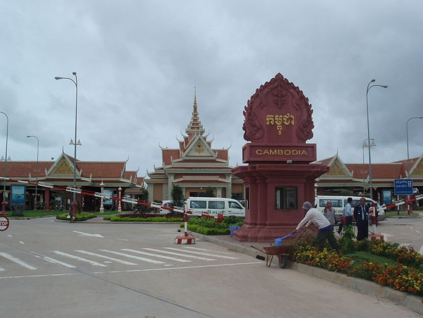

Svay Rieng may be one of the smallest provinces in Cambodia, but it has the country's busiest highway running right through town. National Highway No 1 links Phnom Penh and Ho Chi Minh City of Vietnam just after the Mekong River via the Neak Loeung ferry point. Here is the international gateway of Bavet which leads to Vietnam.
This is a prosperous town reaping the benefits of the border trade traffic. There is a lively marketplace and the people here are friendly. The province comes with good food and great accommodation options.
Nearby, the Waiko River and its vast, scenic marshlands provide pleasant settings for photography. Not far from town is a bridge over the Waiko donated by prime minister Hun Sen.
The allure of this pretty province is not just in its conveniences; its friendly nature, the beautiful Prey Ba Sak lake area just outside of town and the Prasat Prasat temple make this a worthwhile stopover. There are a couple of little known temple ruins here in Svay Rieng as well; they are the Prasat Chea Hao and Prasat Basac.
The province of Svay Rieng is off the tourist maps but it is great for those who want a slice of rural life in Cambodia.